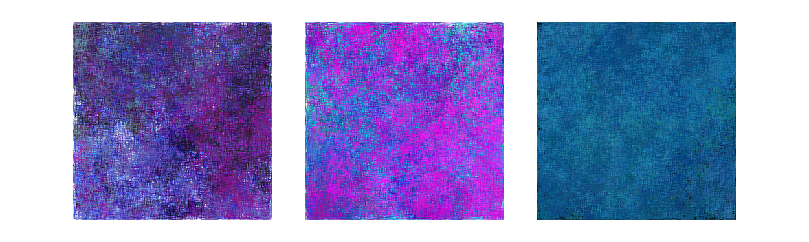

Hybrid Natures
Systems & Interaction Design (2025)
Master’s Thesis
Translating environmental complexity into collective action
A 0–1 platform strategy transforming Amazonian deforestation data into generative artifacts and narrative flows. I designed the framework and participation model to bridge abstract data with tangible civic engagement.